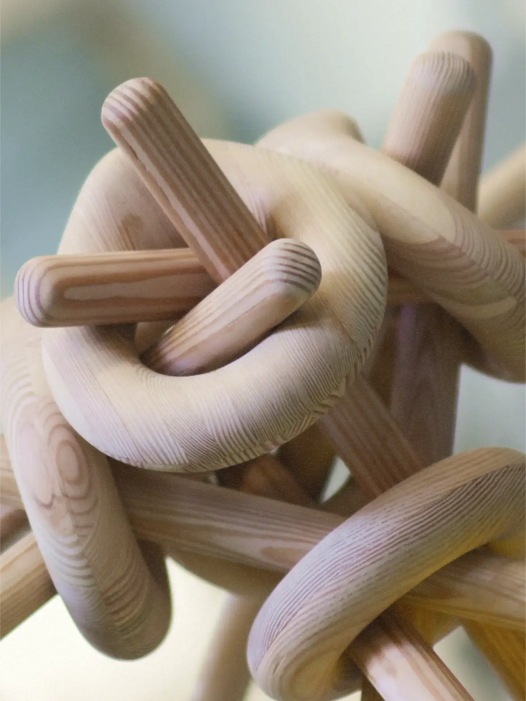
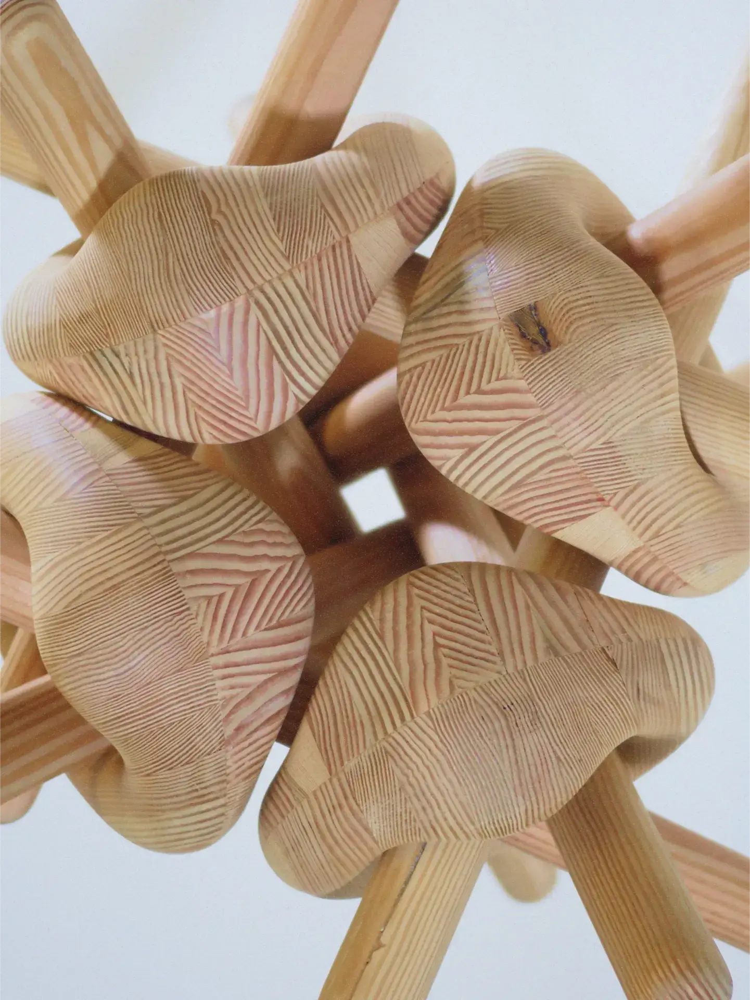
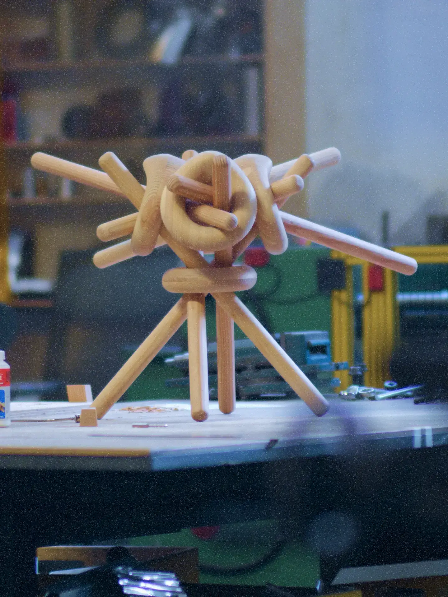

Causalité
Dans le cadre de l’atelier d’objet (DES5575) du professeur Guillaume Sasseville et du chargé de cours Félix Maclean
En équipe avec Nicolas Goneau
Inspirée par la théorie des nœuds qui étudie les courbes s'entrelaçant et se reliant à elles-mêmes, la chaise repose sur une interdépendance entre ses éléments : retirer l’un d’entre eux provoque son effondrement à l’image d’un nœud qui se défait.
 Page "Théorie des nœuds" sur Wikipedia
Page "Théorie des nœuds" sur Wikipedia


